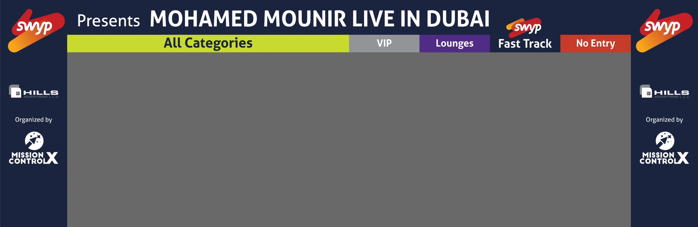
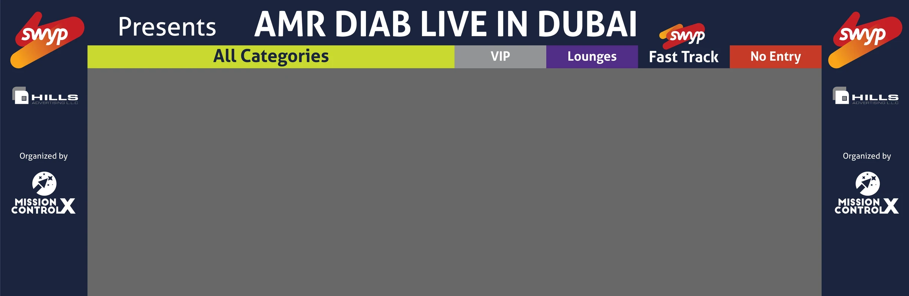

Live shows, Dubai, 2017 to 2018

Live shows · Dubai · 2017 to 2018 · with MCX
Five nights, one city.
Amr Diab, Angham, Mohamed Mounir, Magida El Roumi, Lilly Singh. Live shows in Dubai, 2017 to 2018: creative direction through AntBrush, with MCX as co-producer.
The gate is drawn first.
Mohamed Mounir Live in Dubai, January 2018. The entrance gate, drawn, then built on the night.


Another night, another gate.

Then the stage, then the night.
Four of the five nights, photographed from where the work was checked: the stage, the hall, the crowd.


The night, in motion.
Mohamed Mounir Live in Dubai, 2018 · recap film by MCX, trimmed
RoleAntoni Gerges
Partner, Creative Director & Co-producer, through AntBrush, 2017 to 2022
Partner, Creative Director & Co-producer, through AntBrush, 2017 to 2022
Produced byMCX
Gate and screen artworkAntBrush